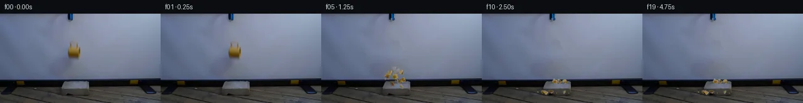
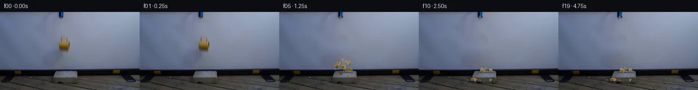
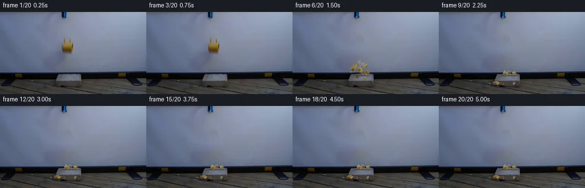
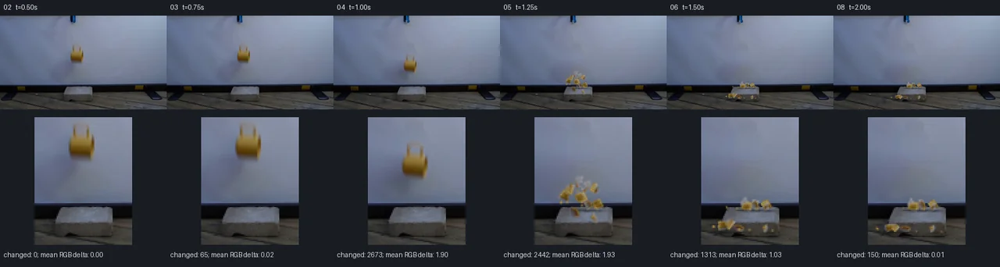

V0 · 初版
2026-11-05T13:38:26.297745+00:00 · RGB 9bdcd0d17938
![]()
Observable Generation Trace
把最终像素视频、Harness 冻结的每轮候选、真实工具事件和 Agent 自述放在同一页。可观测证据与模型自述分开标记，避免把“模型说它检查过”误当成真实工具调用。
![首帧]()
Static locked-off single-shot with fixed frame throughout filmed with constant framerate in real-time. The scene shows a realistic scientific demonstration. The scene only contains the described setup and actions. The blue-black grabber tool was holding the yellow ceramic mug. The blue-black grabber tool is suspended over the ceramic block in front of a white projection screen. The blue-black grabber releases the yellow ceramic mug over the concrete brick.
首帧显示在左侧播放器初始画面。Track 权限、隔离和 tensor 一致性来自 run manifest，而不是 METHOD.md。
默认勾选初版和最终版；可选其他版本一起同步播放。仅检查图更新的连续重复快照已合并，回退旧视频仍保留为一次修订。
Observable events
来源：events.jsonl + run manifest
此 Track 禁止读取输出图片。逐轮预览由外部 Harness 自动冻结，只用于事后审计，生成 Agent 当时看不到这些页面。
Frozen candidates
每张图来自该 round 的真实 00 / 01 / 05 / 10 / 19 帧

pixels 96ee8cedd28d80af · code c328500df8f1cbec
--- previous/generate.py
+++ current/generate.py
@@ -0,0 +1,365 @@
+"""PixelWorld continuation using only local source pixels and analytic mechanics."""
+from pathlib import Path
+import json
+import math
+import numpy as np
+from PIL import Image, ImageDraw, ImageFilter
+from scipy.ndimage import gaussian_filter, gaussian_filter1d, map_coordinates, distance_transform_edt
+from artifact_io import save
+
+ROOT = Path(__file__).resolve().parent
+W, H, S = 256, 144, 4
+SOURCE = np.array(Image.open(ROOT / 'first_frame.png').convert('RGB'))
+YY, XX = np.mgrid[:H, :W]
+RNG = np.random.default_rng(125)
+RELEASE = 0.84
+GRAVITY = 1150.0
+DROP = 36.5
+IMPACT = RELEASE + math.sqrt(2 * DROP / GRAVITY)
+CENTER = np.array([118.0, 59.0])
+
+
+def polygon_mask(vertices, holes=()):
+ image = Image.new('L', (W*S, H*S))
+ draw = ImageDraw.Draw(image)
+ draw.polygon([(round(x*S), round(y*S)) for x,y in vertices], fill=255)
+ for hole in holes:
+ draw.polygon([(round(x*S), round(y*S)) for x,y in hole], fill=0)
+ return np.array(image.resize((W,H), Image.Resampling.LANCZOS)).astype(float)/255
+
+
+# Source-measured silhouette. The upper loop has a transparent aperture.
+MUG_MASK = polygon_mask(
+ [(113,43.5),(121,43.5),(123.8,45.5),(124.1,51.9),
+ (126.8,53.8),(128.2,56.8),(127.8,69.7),(125.8,73.2),
+ (122.0,73.2),(112.5,71.8),(109.7,69.3),(107.7,64.0),
+ (108.0,58.1),(109.6,55.0),(111.4,53.0),(111.4,46.0)],
+ [[(114.8,49.0),(121.1,49.0),(121.1,51.6),(114.8,51.1)]]
+)
+# Prevent numerical resampling ringing outside the local object region.
+MUG_MASK[MUG_MASK < .015] = 0
+
+
+def screen_and_shadow():
+ original = SOURCE.astype(float)
+ prediction = original.copy()
+ columns = np.r_[np.arange(72,88),np.arange(145,164)]
+ for y in range(40,107):
+ for c in range(3):
+ fit = np.polyfit(columns, original[y,columns,c], 2)
+ prediction[y,:,c] = np.polyval(fit, np.arange(W))
+ # Normalized smoothing ignores ceramic pixels when estimating its soft shadow.
+ valid = ((XX>=79)&(XX<=142)&(YY>=48)&(YY<106)&(MUG_MASK<.01)).astype(float)
+ residual = np.clip((prediction-original).mean(axis=2)-1.0,0,45)
+ soft = gaussian_filter(residual*valid,2.0) / np.maximum(gaussian_filter(valid,2.0),1e-6)
+ support = np.clip((XX-79)/9,0,1)*np.clip((142-XX)/10,0,1)
+ support *= np.clip((YY-48)/7,0,1)*np.clip((104-YY)/9,0,1)
+ shadow = soft*support
+ # A restricted texture-preserving shadow lift. Background elsewhere stays exact.
+ clean = original + shadow[:,:,None]
+ # Hide the photographed mug with local fitted screen and real screen grain.
+ grain = original - gaussian_filter(original,(1.2,1.2,0))
+ replacement = prediction + np.roll(grain, -42, axis=1)*.55
+ # Expanded coverage removes antialiased object fringes as well as its core.
+ coverage = np.array(Image.fromarray((MUG_MASK*255).astype('uint8')).filter(ImageFilter.MaxFilter(3))).astype(float)/255
+ coverage = np.maximum(coverage, MUG_MASK)
+ clean = clean*(1-coverage[:,:,None]) + replacement*coverage[:,:,None]
+ return np.clip(clean,0,255), shadow
+
+
+CLEAN, SOURCE_SHADOW = screen_and_shadow()
+
+
+def sprite(rgb, mask):
+ ys, xs = np.where(mask>.012)
+ x0,x1 = int(xs.min())-2, int(xs.max())+3
+ y0,y1 = int(ys.min())-2, int(ys.max())+3
+ x0,y0=max(0,x0),max(0,y0)
+ x1,y1=min(W,x1),min(H,y1)
+ rgba = np.concatenate([np.clip(rgb[y0:y1,x0:x1],0,255).astype('uint8'),
+ np.clip(mask[y0:y1,x0:x1,None]*255,0,255).astype('uint8')],axis=2)
+ image = Image.fromarray(rgba).resize(((x1-x0)*S,(y1-y0)*S),Image.Resampling.BICUBIC)
+ return image, np.array([(x0+x1)/2, (y0+y1)/2])
+
+
+MUG = sprite(SOURCE,MUG_MASK)
+
+
… diff truncated; 278 more lines …
pixels 71ea4e0fdf661093 · code a231f44d03ce4515
--- previous/generate.py
+++ current/generate.py
@@ -148,6 +148,7 @@
if i in (3,6,9):
rgb[mask>.05]=rgb[mask>.05]*.86+np.array([172,150,92])*.14
item=sprite(rgb,mask)
+ local_points=np.column_stack([xs+.5-item[1][0],ys+.5-item[1][1]])
offset=item[1]-CENTER
angle=.065
rot=np.array([[math.cos(angle),-math.sin(angle)],[math.sin(angle),math.cos(angle)]])
@@ -162,7 +163,7 @@
PIECES.append(dict(item=item,area=area,x=float(initial[0]),y=float(initial[1]),
vx=vx,vy=vy,angle=angle,omega=omega,depth=depth,
resting=False,radius=support_radius,rest_angle=rest_angle,
- flattened=1.,bounces=0))
+ flattened=1.,bounces=0,local_points=local_points))
# Tiny chips are taken from brighter yellow source pixels, with simple irregular
@@ -173,10 +174,19 @@
mask=polygon_mask([(118-r,59),(118-.2*r,59-1.1*r),(118+r,59-.2*r),(118+.2*r,59+r)])
rgb=np.zeros_like(SOURCE,dtype=float)+np.array([158,126,62])
item=sprite(rgb,mask)
+ ys,xs=np.where(mask>.05)
+ local_points=np.column_stack([xs+.5-item[1][0],ys+.5-item[1][1]])
PIECES.append(dict(item=item,area=3.,x=x,y=y,vx=float(RNG.uniform(-66,66)),
vy=float(RNG.uniform(-118,-46)),angle=0.,omega=float(RNG.uniform(-13,13)),
depth=float(i%2),resting=False,radius=.65,
- rest_angle=float(RNG.uniform(-2.8,2.8)),flattened=1.,bounces=0))
+ rest_angle=float(RNG.uniform(-2.8,2.8)),flattened=1.,bounces=0,
+ local_points=local_points))
+
+
+def projected_radius(p):
+ points=p['local_points']
+ return float(max(.5,np.max(points[:,0]*math.sin(p['angle'])+
+ points[:,1]*p['flattened']*math.cos(p['angle']))+.3))
def support_height(p):
@@ -195,9 +205,10 @@
p['resting']=False
p['vy']=0.
else:
- p['y']=h-p['radius']
p['angle']+=(p['rest_angle']-p['angle'])*(1-math.exp(-24*dt))
p['flattened']+=(.68-p['flattened'])*(1-math.exp(-18*dt))
+ p['radius']=projected_radius(p)
+ p['y']=h-p['radius']
if abs(p['vx'])<.025:
p['vx']=0.
return
@@ -205,6 +216,7 @@
p['x']+=p['vx']*dt
p['y']+=p['vy']*dt
p['angle']+=p['omega']*dt
+ p['radius']=projected_radius(p)
h=support_height(p)
if p['y']+p['radius'] >= h and p['vy']>0:
p['y']=h-p['radius']
@@ -305,6 +317,8 @@
p['vx']=p['vy']=p['omega']=0.
p['angle']=p['rest_angle']
p['flattened']=.68
+ p['radius']=projected_radius(p)
+ p['y']=support_height(p)-p['radius']
frame=render_pieces(pieces)
phase='fragments settling' if t<2.75 else 'settled'
frame=np.clip(np.rint(frame),0,255).astype('uint8')pixels 71ea4e0fdf661093 · code a231f44d03ce4515
No generate.py text change in this frozen round.
Final visual checks
Harness 保存的最终产物


Agent claims
以下文字由生成 Agent 撰写，不等同于工具证据
Only first_frame.png and prompt.txt inform this reconstruction. The PNG was decoded locally with Pillow/NumPy; measurements used RGB samples, warm-color connected components, and printed coordinate classifications. No image Read/View tool was used and no visual review is claimed.
20 RGB frames, fixed 4 fps, representing five seconds. Sample times are t=n/4, from 0 to 4.75 s; each displayed sample lasts 0.25 s. Release occurs near t=0.84 s. With a projected gravitational acceleration of about 1150 px/s², the 37-pixel fall takes about 0.25 s. This is real-time gravity, without prolonged floating. The brittle mug fractures on its first collision with the hard block. Source-derived ceramic shards retain yellow outside surfaces and have small pale fracture edges. Fragment trajectories use gravity, collisions, restitution, friction, and deterministic final rest; no unrelated objects appear.
| Frame | Time (s) | Planned event |
|---|---|---|
| 00 | 0.00 | Exact input pixels; mug suspended. |
| 01 | 0.25 | Setup remains held and still. |
| 02 | 0.50 | Brief held interval continues. |
| 03 | 0.75 | Tool begins its small opening/release movement; mug still at initial position. |
| 04 | 1.00 | Released mug falls about 15 pixels, rotates slightly; shadow follows. |
| 05 | 1.25 | First post-impact sample: ceramic shell has fractured, pieces spreading from the block. |
| 06 | 1.50 | Large pieces descend; smaller chips bounce on the block/table. |
| 07 | 1.75 | Fragments lose energy in low rebounds. |
| 08 | 2.00 | Lateral motion slows from surface friction. |
| 09 | 2.25 | Final small rebounds and slides. |
| 10 | 2.50 | Nearly settled ceramic remains around the block. |
| 11 | 2.75 | Fragments settle fully. |
| 12 | 3.00 | Stable aftermath. |
| 13 | 3.25 | Stable aftermath. |
| 14 | 3.50 | Stable aftermath. |
| 15 | 3.75 | Stable aftermath. |
| 16 | 4.00 | Stable aftermath. |
| 17 | 4.25 | Stable aftermath. |
| 18 | 4.50 | Stable aftermath. |
| 19 | 4.75 | Final stable aftermath; original framing. |
Create generate.py, pixels.npz, twenty numbered PNGs, inspection.png, transition_check.png, a standalone index.html player, and METHOD.md. Verify dimensions, dtype, frame-zero exact equality, uint32 0xRRGGBB packing, and equality of every saved PNG with its tensor slice. Inspect numeric support bounds and inter-frame changes to catch stale mug pixels or accidental camera/background motion. Inspection images are saved as artifacts, without claiming they were viewed.
The continuation uses local Python pixel operations with Pillow, NumPy, and SciPy. The only scene inputs were first_frame.png and prompt.txt. GENERATION_RULES.md supplied output requirements, and the supplied artifact_io.py and player_template.html supplied serialization/player helpers. No network, other cases, external reference images, AI models, external rendering/physics engine, or subagents were used. No image Read/View tools were used. Source inspection and output review were numeric, so no visual review is claimed.
OBSERVATION.md was written before the generation program and contains the measured scene coordinates and twenty-frame event plan.
The original photograph provides the fixed screen, concrete block, tabletop, peripheral supports, recorded lighting, and ceramic surface texture. The first three frames preserve its decoded RGB pixels exactly. The visible blue-black tool tip opens by less than two pixels during release while its upper shaft remains fixed.
The mug is extracted using a manually specified silhouette based on coordinate/RGB classifications. Its small upper aperture is transparent. During its fall, the original ceramic pixels move as a rigid sprite with a small rotation. A three-sample 5 ms shutter approximation supplies slight motion softness; transforms and compositing use fourfold supersampling. This is a source-pixel reconstruction, not a new learned rendering of the setup.
When the mug leaves its original position, local quadratic fits to unoccluded screen columns reconstruct the background behind it. Grain is copied from nearby screen pixels. Normalized Gaussian smoothing estimates the soft shadow while excluding the mug. Only the local mug/shadow region is repaired, and a translated version of the source shadow follows the falling object until it passes below the projection screen. The remainder of the scene keeps the original pixels.
Frames are sampled at t=n/4 seconds. Each of the twenty samples is displayed for 0.25 s, giving a five-second clip at 4 fps. Release is at 0.84 s. Projected acceleration is 1150 px/s² and the initial fall is 36.5 pixels, giving first contact at 1.09195 s. Frame 04 contains the falling mug about 14.7 pixels below its starting position; frame 05 is the first sample after collision. This coarse sampling captures the instantaneous collision through its aftermath rather than adding slow motion.
The brittle-impact outcome is a modeled continuation: ceramic failure is inferred from the hard block, not measured from unseen future frames. Eleven Voronoi cells partition the source-textured mug into shell and handle pieces. Newly cut edges receive a narrow pale ceramic tint; three pieces receive a modest interior tint. Seven small chips use irregular analytic polygons in a palette measured from the yellow ceramic. No dust cloud or additional props are added.
Fragments follow deterministic initial velocities and angular velocities, integrated with a maximum 0.0025 s time step. Gravity, collision restitution, lateral damping, and surface friction govern their movement. A piece can land on the narrow block top or drop to the tabletop at its near side or beyond an edge. Contact uses each fragment's rotated silhouette support, revised from a simpler radius estimate to avoid surface penetration. Fragment rotation and vertical foreshortening settle after impact, with small soft contact shadows. All eighteen pieces are resting by frame 08; RGB changes become zero after frame 09. Frames 12–19 are exactly identical.
This is a two-dimensional pixel/rigid-fragment approximation, with simple projected support planes and inferred fracture geometry. It does not claim full three-dimensional ceramic mechanics or recovered invisible tool geometry.
generate.py: deterministic generator; rerun with python generate.py from this workspace.pixels.npz: one pixels array, shape (144,256,20), dtype uint32, packed as 0xRRGGBB.frames/00.png through frames/19.png: twenty RGB PNGs, each 256×144.inspection.png: an eight-frame contact sheet generated by the supplied output helper.transition_check.png: release/impact samples, enlarged local crops, and numeric adjacent-frame change counts.index.html: a standalone embedded-data player at fixed 250 ms frame intervals; it has no external resources.validation.json: timing, phases, changed-pixel counts, and successful equality checks.Validation checks every decoded PNG against its uint32 tensor slice and the generated RGB frame, and verifies exact decoded-pixel equality between frame 00 and the source. Additional checks constrain all changes to the tool tip, mug/shadow region, and fragment/contact region; untouched background pixels remain exact. The embedded HTML delta stream is decoded independently and verified against all twenty tensor slices. Artifact dimensions, PNG modes, tensor key/dtype, frame count, and stable final frames are also checked. The inspection sheets are saved but were not viewed with an image tool.